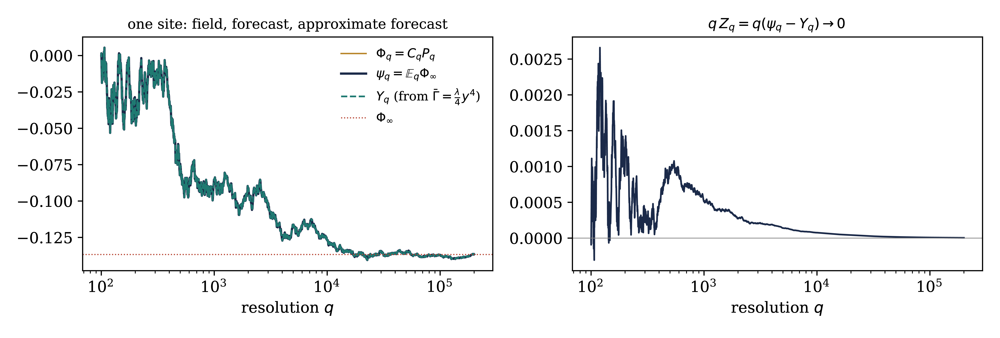
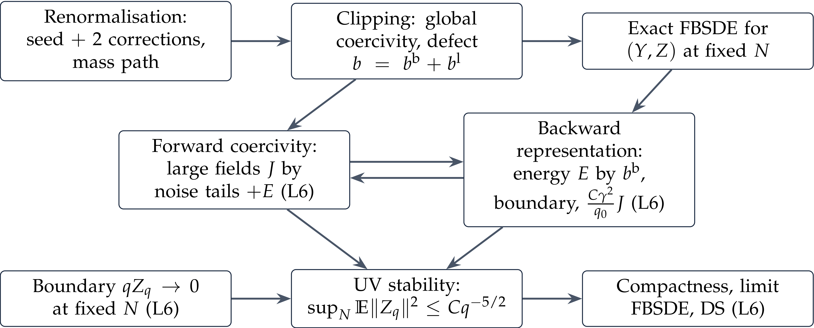
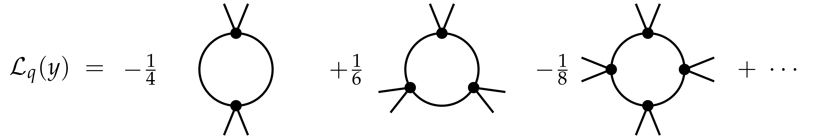
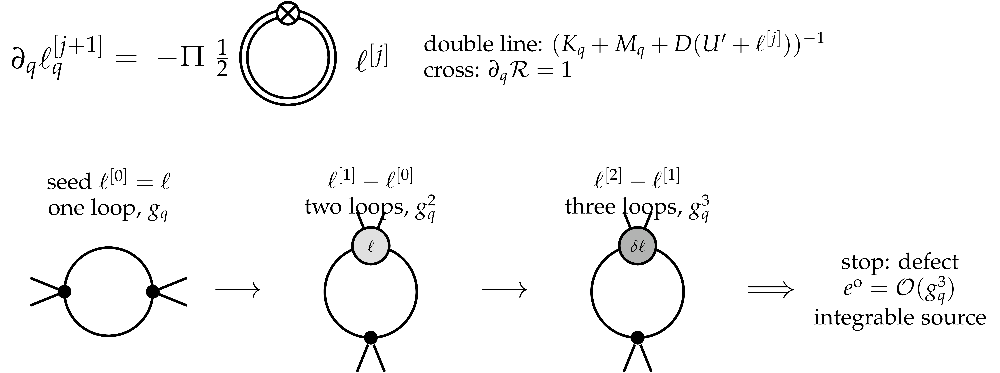
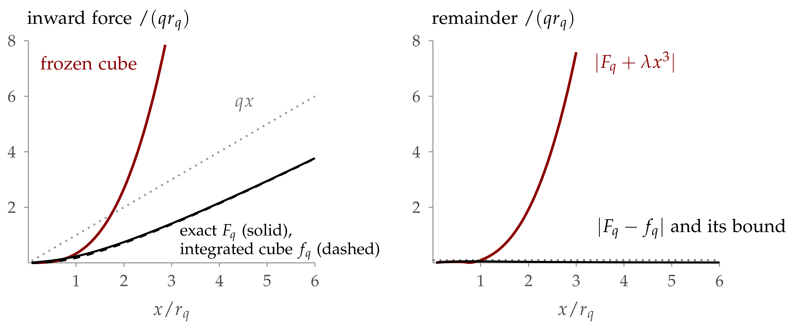

A Constructive Introduction to Quantum Field Theory
\(\Phi^4_3\) on the torus I: the FBSDE in force coordinates and renormalisation
Massimiliano Gubinelli | University of Oxford
Joint work with Sarah-Jean Meyer, with the use of AI
SISSA lectures, Lecture 5 (provisional) — notes: Lecture 5, §§10–12
Lecture 4. Interacting field at resolution \(t\) = solution of the FBSDE
In the forecast coordinate \(\psi_t =\mathbb{E}_t \Phi_T\) the forward equation has no drift and the trees are integrated exactly; the backward half is the force equation.
Lectures 5–6. Construct \(\Phi^4_3\) on \(\mathbb{T}^3\) with this FBSDE:
deterministic renormalisation: an explicit approximate force \(\bar{\mathcal{F}}_q\) and its defect (today);
a priori estimates for the exact FBSDE in the coordinates of \(\bar{\mathcal{F}}_q\), uniform in the lattice (Lecture 6);
removing the cutoffs and identifying the limit (Lecture 6).
G., course notes on \(\Phi^4_3\) via FBSDEs (2026); Bailleul–Chevyrev–G. (in prep.)
For every coupling \(\lambda > 0\) and every mass \(m^2 = q_0 > 0\), on a fixed torus, with no smallness, and an explicit counterterm with arbitrary finite part:
the whole lattice sequence converges to a measure \(\nu\), an explicit density over an explicit SDE;
the forecasts converge to the solution of an FBSDE from \(Y_{q_0} = 0\), driven by the limit of the lattice innovations, and \(\psi_q = m_q (\Phi_q)\);
uniqueness in law for its scalar form, a variational formula with no infinite constant, quartic tails, integration by parts.
Not proved: the vector FBSDE alone, strong solutions, OS axioms in full, infinite volume.
Guiding principle. Do not estimate \(\Phi\) and \(F\). Estimate the error of an explicit approximate forecast.
The results of Lectures 5–6 are new: joint work with S.-J. Meyer + AI.
The problem and the exact FBSDE
Lecture 5
\(\Lambda_N = (N^{- 1} \mathbb{Z}/\mathbb{Z})^3\), \(\int f = N^{- 3} \sum_x f (x)\), \(\Delta = \Delta_N\) nearest neighbour. Resolution parameter \(q = q_0 + t^2 \in [q_0, \infty)\):
In Lecture 3 notation (\(T = \infty\), and \(\dot{Q} = \partial_q Q_q\)):
Free resolvents (uniform in \(N\))
\(C_q \geqslant 0\) as a kernel, \(C_q \mathbb{1} = q^{- 1} \mathbb{1}\), \(\|C_q \|_{p \to p} = q^{- 1}\),
The bubble \(a_2 (q)\) is the coincident-point variance of the shell at resolution \(q\).
\(U (\varphi) = \frac{\lambda}{4} \int \varphi^4\), \(V_N = U + \frac{\mu_N}{2} \int \varphi^2\), \(\nu_N (\hspace{0.17em} \mathrm{d} \varphi) =\mathcal{Z}_N^{- 1} \mathrm{e}^{- V_N (\varphi)} \mu^C (\hspace{0.17em} \mathrm{d} \varphi)\).
\(\gamma = 3 \lambda\), so \(D^2 U (y) = \gamma y^2\) (not the counterterm \(\gamma_T\) of Lecture 4). The Wick ordering is now part of \(\mu_N\).
Main result, informal. Let \(\mu_N = r - 3 \lambda \text{Tr} C + 6 \lambda^2 \int C^3\). Then (a) \(\nu_N \to \nu\) in \(H^{- s}\), \(s > \frac{1}{2}\), along the whole sequence; (b) the forecasts converge in law to a solution of a limiting FBSDE; (c) \(\nu\) has a variational formula, an integration by parts formula and quartic tails.
These come from bounds on the error \(Z\) of an approximate forecast, uniform in \(N\): UV stability.
By Lecture 4 (filtering and the field equation), in the profile \(S_q = C_q\), \(\mathcal{R}_q = q - q_0\). Fixed \(N\): everything is a theorem. \(\Phi_{\infty} \sim \nu_N\), \(B\) an independent Brownian motion,
With \(\mathcal{K}_q (p) = \text{log} \int \mathrm{e}^{\langle p, \varphi \rangle - \frac{q - q_0}{2} \| \varphi \|^2} \nu_N (\hspace{0.17em} \mathrm{d} \varphi)\):
forecast \(\psi_q = D\mathcal{K}_q (P_q)\), covariance \(\text{Cov}_q = D^2 \mathcal{K}_q (P_q)\);
innovation \(W_q = P_q - \int_{q_0}^q \psi_s \hspace{0.17em} \mathrm{d} s\), \(\hspace{0.17em} \mathrm{d} \psi_q = \text{Cov}_q \hspace{0.17em} \mathrm{d} W_q\);
field \(\Phi_q = C_q P_q\), force \(F_q = K_q (\psi_q - \Phi_q) =\mathbb{E}_q [- DV_N (\Phi_{\infty})]\): this is the FBSDE of Lecture 4.

Illustration: \(\nu \propto \mathrm{e}^{- \lambda \varphi^4 / 4} \mu^{1 / q_0}\) on one site, \(\lambda = 2\), \(q_0 = 100\) (\(g_{q_0} = 0.6\)). \(\Phi_q = P_q / q\), the posterior mean \(\psi_q\), and the approximate forecast \(Y_q\) from \(\bar{\mathcal{F}} = \lambda y^3\). All converge to the hidden \(\Phi_{\infty}\), and \(qZ_q \to 0\).
Since \(\text{Cov}_q > 0\), \(p \mapsto D\mathcal{K}_q (p)\) is invertible: define \(\mathcal{F}_q\) by \(K_q \Phi_q = K_q \psi_q +\mathcal{F}_q (\psi_q)\), and \(H^{\text{ex}}_q (y) = (K_q + D\mathcal{F}_q (y))^{- 1}\).
It is the \(\mathcal{F}\) of Lecture 4 (\(x = \psi + S\mathcal{F} (\psi)\)), and \(F_q = -\mathcal{F}_q (\psi_q)\).
The force equation with a mass regulator
Itô on \(P = K \psi +\mathcal{F} (\psi)\). Its integrated form is Wetterich's equation, which we do not need. An identity about the unknown \(\nu_N\), not a construction. Strategy: an approximate force \(\bar{\mathcal{F}}\) gives approximate forecast coordinates; the error should be driven by the failure of \(\bar{\mathcal{F}}\) to solve this equation.
\(\bar{\mathcal{F}}_q\) odd, \(D \bar{\mathcal{F}}_q\) symmetric, \(K_q + D \bar{\mathcal{F}}_q \geqslant \bar{c}_q\).
Exact, at fixed \(N\)
Proof: Itô on the coordinate equation, with \(\hspace{0.17em} \mathrm{d} P = \psi \hspace{0.17em} \mathrm{d} q + \hspace{0.17em} \mathrm{d} W\): the martingale part gives \(H\), the drift gives \(HZ + b\).
\(Y\): forward and explicit once \(Z\) is known; coefficients \(b, H\) built from \(\bar{\mathcal{F}}\).
\(Z\): backward. The terminal condition \(qZ_q \to 0\) is proved at fixed \(N\) (Lecture 6), because \(\bar{\mathcal{F}}_q \to\) bare force.
The only source of \(Z\) is the drift \(b\), the force defect, transported by \(\exp \int H\).
UV stability
The explicit force \(\bar{\mathcal{F}}\) computes the forecast up to an error \(Z\) which is small uniformly in \(N\).
Needed: (i) a defect integrable against the backward propagator (renormalisation); (ii) global coercivity of \(\bar{\mathcal{F}}\) (large fields); (iii) a priori estimates (Lecture 6).

Renormalisation: why two of them
Lecture 5
Free field at resolution \(q\): \(\text{Var} X_q (x) \lesssim q^{1 / 2}\), typical size \(q^{1 / 4} = g_q^{1 / 2} r_q \ll r_q\).
Rooted norm of a vertex \(T (x_1, \ldots, x_k)\) and field ball:
Natural size of the \(k\)th vertex of the loop corrections:
Loop estimate
A closed loop with \(p\) vertices: \(s (\text{loop}) \leqslant Ca_2 (q) \hspace{0.17em} q^{- (p - 1)} \prod_i s (T_i)\) (two propagators in \(L^2\), the others in operator norm). After the \(q\) integration a one-loop term is of size \(g_q qr_q^{2 - k}\); every further loop gains a factor \(g_q\).
Seed (one loop): replace \(D\mathcal{F}\) by \(\gamma y^2\) and integrate from \(q = \infty\), with the linear part subtracted,
Leading term = bubble, \(s (D^3 \ell_q (0)) = 6 \gamma^2 a_2 (q)\).
Corrections. \(\Pi\) removes the linear jet, \(M_q = \mu_q + \Theta_q\) a linear path, \(U\prime = \lambda y^3\),


Each step inserts the previous correction into the loop: one more loop, one more \(g_q\). Two steps give a defect of order \(g_q^3\).
The linear jet is not iterated: it is solved exactly by \(M\),
with \(\mu_{q_{\ast}} = b\), \(|b| \leqslant B \gamma q_{\ast}^{1 / 2}\), at an auxiliary scale \(q_{\ast}\), and \(\Theta_q \to 0\) as \(q \to \infty\). Bare mass \(\mu_N = \text{lim}_{q \to \infty} \mu_q\): an output of the flow.
For \(q_{\ast}\) large, uniformly in \(N\). Unique solution in a ball, \(| \mu_q | \leqslant C \gamma q\), \(v_1 (\Theta_q) \leqslant C \gamma^2 q^{- 1 / 2}\); increments \(\mathcal{N}_k (\ell^{[j]} - \ell^{[j - 1]}) \leqslant C_k g_q^{j + 1} qr_q^{2 - k}\); and the defect of \(\mathcal{F}^{\text{o}}\): \(S_4 (\mathcal{D}^{\text{o}}_q) \leqslant C \gamma^5 q^{- 3}\).
Explicit counterterm. \(\mu_N = r - 3 \lambda \text{Tr} C + 6 \lambda^2 \int C^3\) is admissible: the measure does not depend on \(q_{\ast}\).
The two divergent self-energies of Appendix A.2 of Lecture 4:
Tadpole: \(- \gamma \int_{q_{\ast}}^{\infty} \text{Tr} R_{0, q}^2 \hspace{0.17em} \mathrm{d} q \approx - 3 \lambda \text{Tr} C \sim - N\). Wick ordering: \(\frac{\lambda}{4} \varphi^4 - \frac{3}{2} \lambda c \varphi^2 = \frac{\lambda}{4} H_4 (\varphi ; c) +\)const.
Sunset: contracting the bubble in \(D^3 \ell (0)\) with \(R_0^2\) and integrating gives the two-loop self-energy,
Power counting: nothing else. In the flow: the integrals from \(q = \infty\) of all vertices with \(k \geqslant 4\) legs converge; only the linear jet needs a boundary condition.
\(\mu_q\) at fixed \(q\) has a limit as \(N \to \infty\); \(\mu_N\) does not. Never interchange the two limits.
The cross is \(R_{0, q}^2\). The bubble in \(D^3 \ell^{[2]} (0)\) produces the sunset.
Backward propagator \(\approx s / q\), so \(Z_q \approx \int_q^{\infty} \frac{s}{q} b_s \mathrm{d} s\), and on the ball \(|b_s | \lesssim s^{- 1} \textsf{S}_4 (\mathcal{D}_s) r_s^3\). After \(n\) steps, \(\textsf{S}_4 (\mathcal{D}_s) \lesssim g_s^{n + 1} s^{1 / 2} r_s^{- 4}\):
| steps \(n\) | \(\textsf{S}_4 (\mathcal{D}_s)\) | \(|b_s |\) | \(\int_q^{\infty} \frac{s}{q} |b_s | \mathrm{d} s\) |
| \(0\) | \(\gamma^3 s^{- 2}\) | \(\gamma^{3 / 2} s^{- 3 / 2}\) | \(\infty\) (power) |
| \(1\) | \(\gamma^4 s^{- 5 / 2}\) | \(\gamma^{5 / 2} s^{- 2}\) | \(\infty\) (log) |
| \(2\) | \(\gamma^5 s^{- 3}\) | \(\gamma^{7 / 2} s^{- 5 / 2}\) | \(2 \gamma^{7 / 2} q^{- 3 / 2}\) |
Two steps are the minimum, and suffice. The defect of one step is borderline in the backward equation, as the sunset is borderline in the mass. (Heuristic threshold for \(\Phi^4_3\): \(n > 1\); the general theory's sufficient criterion is \((n + 2) \varkappa > (3 + \varkappa) / 2\), \(\varkappa = \frac{1}{2}\), met by \(n = 2\).)
The flow at large fields
Lecture 5
All bounds hold on \(\mathcal{B}_q\) only. The free field exceeds \(r_q\) with small, nonzero probability, and nothing a priori controls the interacting forecast. We need \(\bar{\mathcal{F}}_q\) defined and uniformly coercive for all fields.
Scalar model
\(\ell_q (y) = \gamma y [(q + \gamma y^2)^{- 1} - q^{- 1}]\): power series of radius exactly \(r_q\) (singularities at \(\pm \mathrm{i} r_q\)). Half of the truncations destroy monotonicity. The exact function is harmless, \(| \ell_q \prime | \leqslant \frac{9}{8} \gamma / q\).
Perturbative control for \(|y| \lesssim r_q\); outside, a non-perturbative replacement that keeps the structure the estimates use: coercivity, carried by the bare cube.
One site: \(qy + \lambda y^3 = p\), noise coefficient \(H_q (y) = (q + \gamma y^2)^{- 1} \leqslant q^{- 1} \wedge (\gamma y^2)^{- 1}\). Large fields are more elliptic and less noisy.
\(\tau\) smooth odd, \(\tau (u) = u\) on \([- 1, 1]\), constant outside \([- 2, 2]\), \(0 \leqslant \tau \prime \leqslant 1\);
The cubic and linear parts are not clipped, and \(D \kappa_q\) keeps the force a gradient. Globally: \(s (D^{j - 1} \tilde{\ell}_q) \leqslant Cg_q qr_q^{2 - j}\) (\(j = 2, 3, 4\)), \(s (D \partial_q \tilde{\ell}_q) \leqslant Cg_q\).
Global coercivity
For all \(y\): \(c (K_q + \gamma y^2) \leqslant H_q (y)^{- 1} \leqslant C (K_q + \gamma y^2)\),
Neumann series for \(H = (I + G (M + D \tilde{\ell}))^{- 1} G\), \(G = (K_q + \gamma y^2)^{- 1} \leqslant C_q\).
\(b = b^{\text{b}} + b^{\text{l}}\), \(b^{\text{b}} = - H \hspace{0.17em} D \kappa \hspace{0.17em} \mathcal{D}^{\text{o}} (\kappa y)\), \(t_q (y) = y \mathbb{1}_{|y| > r_q}\).
Proposition.
Sources of \(b^{\text{l}}\) (four groups): the mass term \(M' y - JM' \kappa y\) (\(J = D \kappa\), \(M' = \partial_q M\); linear part unclipped, flow computed at \(\kappa y\)); the motion of the clip; cubic vertex at \(y\) vs correction at \(\kappa y\); chain-rule terms with \(\kappa'', \kappa'''\). All vanish if \(\|y\|_{\infty} \leqslant r_q\).
The point
\(b^{\text{l}}\) is as large as the whole drift, but supported on large fields. It is controlled by how often the actual dynamics visits them: \(\int q^{- 3 / 2} \gamma \|t_q (Y_q)\|_6^6 \hspace{0.17em} \mathrm{d} q\) (Lecture 6).
With \(DU = \frac{\gamma}{3} y^3\):
Up to a small Lipschitz perturbation, the forecast solves the cubic elliptic equation \(K_q (Y + \varrho) + \frac{\gamma}{3} Y^3 = K_q \Phi_q\) driven by the field at resolution \(q\).
Summary of today, at every lattice:
\(\mu_N\), \(M_q\) and a globally coercive \(\bar{\mathcal{F}}_q\), all deterministic;
the exact FBSDE for \((Y, Z)\);
a source whose bounded-field part is integrable (two steps), and whose large-field part is controlled by sixth powers of \(Y\) on large fields.
Next: estimates on \((Y, Z)\) uniform in \(N\).
The expansion needs \(g_q\) small, so \(\bar{\mathcal{F}}_q\) is built for \(q \geqslant q_{\ast}\). Below \(q_{\ast}\) nothing needs constructing: freeze it,
Then \(K_q + D \bar{\mathcal{F}}_q = K_{q_{\ast}} + D \bar{\mathcal{F}}_{q_{\ast}}\): coercivity is automatic, \(H_q = H_{q_{\ast}}\), and \(y_q (x) = y_{q_{\ast}} (C_{q_{\ast}} K_q x)\).
The defect is explicit: \(\mathcal{D}_s (y) = - y + \frac{1}{2} \text{Ctr}_{H_{q_{\ast}}^2} D^2 \bar{\mathcal{F}}_{q_{\ast}} (y)\), with \(\|\mathcal{D}_s (y)\|_p \leqslant C \|y\|_p\).
So the system holds on \([q_0, \infty)\) with \(Y_{q_0} = 0\): the initial value is deterministic, with no large mass. \(q_{\ast}\) stays only in the proofs, where the expansion and the closure of the loop need \(g_q\) small.
Programme: keep \(- \lambda \varphi^3\) unclipped, clip the higher orders, pay in the source of \(R = F - f\). Test it on one site: \(K_q = q\), \(S = 1 / q\).

So \(R / (\lambda x^3) \to 1\): the remainder cancels the cube. Field equation: \(qx = (q - q_0) m_q + \eta_q\), only linear confinement.
\(f^c = f_1 +\mathcal{C}f_2\), with \(f_1 = - \lambda (x^3 + 3 Sx)\), \(f_2\) the first tree, \(\mathcal{C}f_2 = \kappa_q \prime \cdot f_2 \circ \kappa_q\). For \(|x| \geqslant 2 r_q\), the Burgers defect is exactly
of size \((q / \lambda)^{1 / 2}\) at the edge of the clip: not integrable in \(q\).
The source and the dissipation cancel for the true \(R \sim \lambda x^3\): separate estimates give nothing.
Tails independent of \(R\): on one site from the posterior moment, but not uniform on the lattice (negative bare mass).
More orders do not help: the tree series has radius \(\frac{2}{3} r_q\).
Solve the transport part of the flow exactly:
\(y_q (\Phi_q) = Y_q\): this is the forecast coordinate. \(F_q - f_q = K_q Z_q\), and \(Z\) is the posterior mean minus the mode.
The defect is \(qb_q (y)\): bounded for all fields. The trees are in \(x \mapsto y\); the cube does not flow in \(y\), so only loops are clipped.
The cube is coercive in \(y\): \(qy + \lambda y^3 = P_q\).
Not a no-go theorem: it rules out only estimating \(R\) as a small perturbation of the frozen cube. Integrating the cube in the original field is possible, but on the lattice its loop defect must still be renormalised; that route is not proved here.